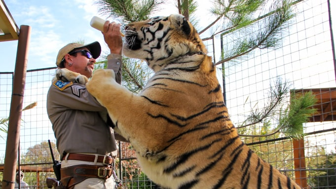
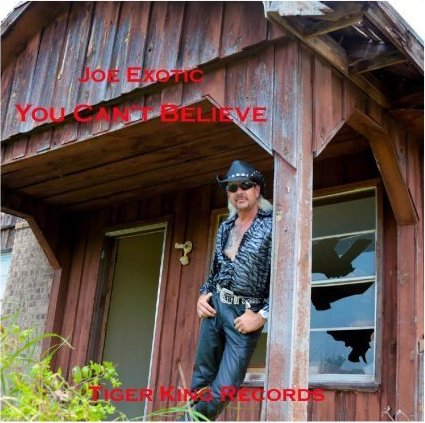
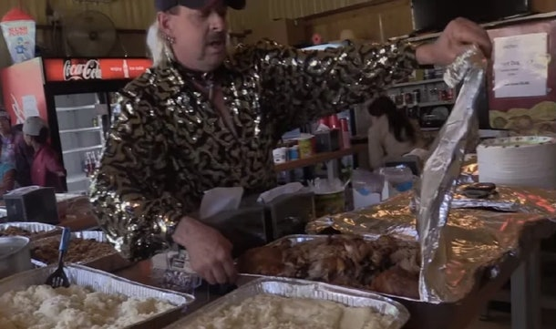

Joseph Allen Maldonado-Passage
Influencer, zoo operator, musician, husband
Résumé
Former zoo operator and aspiring country singer. Before working with animals was a police officer—briefly serving as the chief of police in Eastvale, Texas. Unsuccessfully ran for public office, first for President of the United States in 2016 as an independent, and then for Governor of Oklahoma in 2018 as a Libertarian.
Notorious for Netflix Documentary
Experience
Recent
-
7th September, 2018 – now
Influencer at Grady County Jail
Back then
-
- Joe Exotic was sentenced to 22 years in federal prison
-
- Was arrested and indicted for murder-for-hire of Carol Baskin as well as charges of animal abuse
-
- Travis Maldonado's Death By Accidental Suicide
-
- Joe's Presidential and Governor Campaigns
-
- Joe offered to put his zoo in Jeff Lowe's name as a way to protect his assets from Baskin
-
- Travis,Joe, and John Finlay were married in a throuple ceremony.
-
- Joe Exotic's Battles With Carole Baskin Begin.
-
- Joe acquired his first tigers
-
- Joe Exotic Starts His Zoo
-
- Joe opened a pet store in Arlington, Texas, with his brother Garold and first husband, Brian Rhyne
Character
Imaginative
Open-minded
Animal-lover
Justice fighter
Handsome
Generous
Albums

Charity
Thanksgiving meals are made each year for the community
